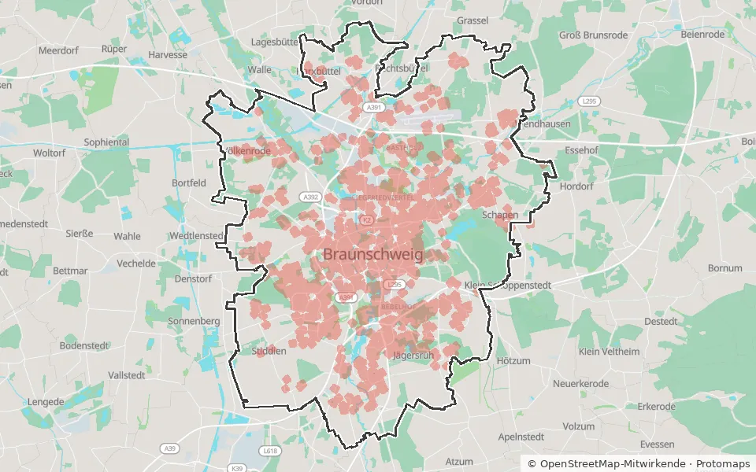
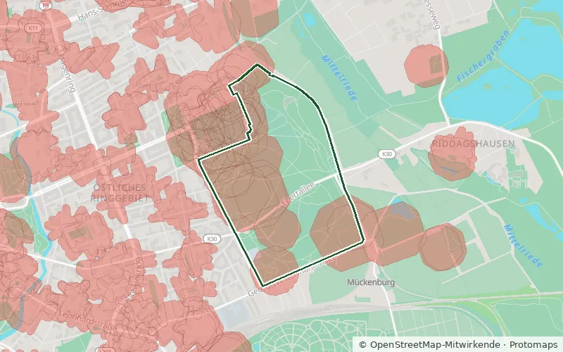
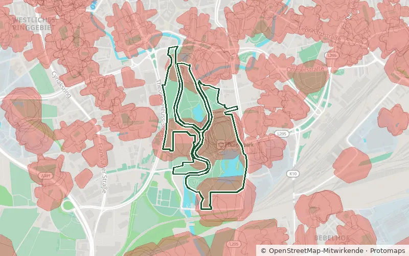
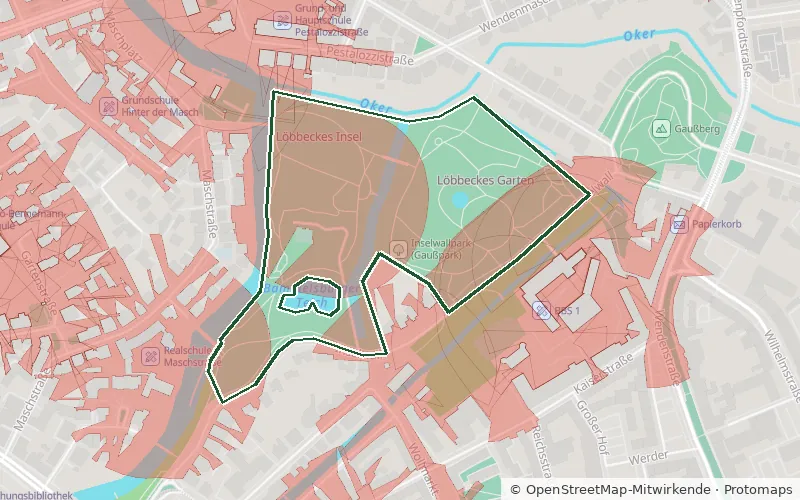
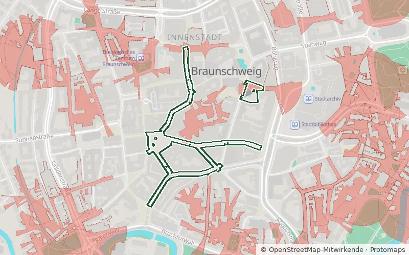
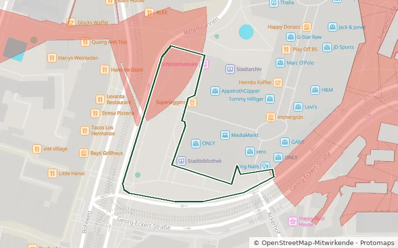
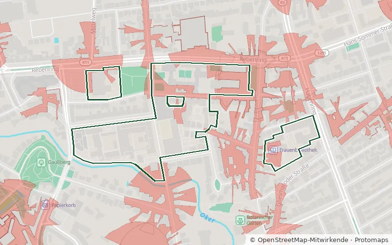

In Braunschweig ist öffentliches Kiffen auf 27 km² verboten, das sind 14,1 % der Stadtfläche von 193 km². Grund sind 1 567 Einrichtungen wie Schulen und Spielplätze: In ihrer Sichtweite, bis 100 Meter vom Eingang und ohne Gebäude dazwischen, verbietet § 5 KCanG den Konsum. Dazu kommen die Fußgängerzonen von 7 bis 20 Uhr und überall die Gegenwart von Minderjährigen.
Die Innenstadt liegt innerhalb der Okerumflutgräben, und große Teile davon sind Fußgängerzone (siehe unten). Wald gibt es wenig (15 % der Stadtfläche); ohne ihn gerechnet sind es 15,1 %.

Woher die Zonen in Braunschweig kommen
| Einrichtung | Anzahl | Zonenfläche |
|---|---|---|
| Schulen | 145 | 5,4 km² |
| Kitas und Kindergärten | 145 | 3,5 km² |
| Kindertagespflege | 12 | 0,2 km² |
| Spielplätze | 427 | 9,4 km² |
| Kinder- und Jugendeinrichtungen | 38 | 0,8 km² |
| Sportstätten | 799 | 15,6 km² |
| Anbauvereinigungen | 1 | unter 0,1 km² |
Jede Art für sich gezählt, Überlappungen also mehrfach. Anbauvereinigungen nur, soweit in OpenStreetMap eingetragen.
Die meisten Zonen gehen auf die 799 Sportstätten zurück, danach auf die 427 Spielplätze. Auf allen Spielflächen, auch Bolz- und Jugendplätzen, verbietet die Park- und Grünanlagensatzung außerdem, zu rauchen und Alkohol zu trinken; sie sind von 7 bis 22 Uhr offen, ein Verstoß kostet bis zu 5.000 Euro (Park- und Grünanlagensatzung).
Prinz-Albrecht-Park, Bürgerpark und Wallring
Im Prinz-Albrecht-Park liegen 52 % der Fläche in einer Zone: Neun Sportanlagen, zwei Kitas und ein Spielplatz liegen im Park. Im Bürgerpark an der Oker sind es 49 %, um 15 Sportanlagen und zwei Spielplätze.


Im Inselwallpark am Umflutgraben liegen 71 % in einer Zone: Im Park liegt nur ein Spielplatz, rundherum aber sieben Schulen. Vom Löwenwall sind es 51 %, auf einem 100 Meter breiten Streifen Land entlang der Flüsse 19 %. Im Theaterpark liegen 83 % in einer Zone, in Viewegs Garten 65 %, im Heidbergpark 40 %. Vom Südsee liegen 8 % der Wasserfläche in einer Zone, vom Heidbergsee 11 %. Der Südstadtpark liegt zu 73 % in einer Zone, der Nordpark zu 71 %, der Stadtpark zu 68 %.

Innenstadt
Eine amtliche Liste der Fußgängerzonen gibt es nicht; die Sondernutzungssatzung spricht nur von den Fußgängerzonen „innerhalb der Okerumflutgräben westlich des Bohlwegs“ (Stadtrecht). Der Stadtplan der Touristinfo färbt unter anderem Damm, Sack, Schuhstraße, Kohlmarkt, Hutfiltern, Platz der Deutschen Einheit, Friedrich-Wilhelm-Straße und Schlossplatz als Fußgängerzone ein (Stadtplan). Dort gilt von 7 bis 20 Uhr Konsumverbot; blau sind die Fußgängerbereiche aus OpenStreetMap.
Von Damm, Sack und Schuhstraße liegen außerdem 12 % in einer Sichtweiten-Zone. Der Kohlmarkt liegt außerhalb (0 %), vom Schlossplatz liegen 24 % in einer Zone. An den Rathauskolonnaden am Bohlweg verbietet die Stadt abends Alkohol, Cannabis nicht (Allgemeinverfügung, 2023).


Universität und Eintracht-Stadion
Hochschulen sind nach § 5 KCanG keine Verbotsorte. Vom Zentralbereich der TU Braunschweig liegen 20 % in einer Zone, um die Kita auf dem Gelände und Sportanlagen und Spielplätze am Rand.

Im Eintracht-Stadion verbietet die Stadionordnung der Stadt, Cannabis mitzuführen (Stadtrecht). Für Weihnachtsmarkt, Schoduvel und Magnifest haben wir keine eigene Regel zu Cannabis gefunden.
Was sonst noch in Braunschweig gilt
Ein Verstoß gegen § 5 Abs. 2 kostet in Niedersachsen 20 bis 500 Euro, in Gegenwart von Minderjährigen 20 bis 1.000 Euro (Bußgeldkatalog Niedersachsen); zuständig ist die Stadt. Die Waffenverbotszone im Friedrich-Wilhelm-Viertel regelt Cannabis nicht (Verordnung). Eigene Verbotszonen für Cannabis hat Braunschweig nicht (Stand 27. November 2026).
Häufige Fragen zu Braunschweig
Wo darf man in Braunschweig kiffen?
Nach § 5 KCanG außerhalb der roten Flächen, etwa am Kohlmarkt nach 20 Uhr (0 % in einer Zone) oder im Wald. Nicht auf Spiel- und Bolzplätzen, tagsüber nicht in den Fußgängerzonen der Innenstadt, nie in Gegenwart von Minderjährigen. Weiß heißt nicht sicher erlaubt: Hecken, Bäume und fehlende Einrichtungen kennt die Karte nicht.
Wie genau ist das?
Täglich aus OpenStreetMap gerechnet, mit Gebäuden als Sichthindernis; die Zahlen hier sind vom 27. November 2026. Eine Orientierungshilfe, keine Rechtsauskunft (wie gerechnet wird).
Fehlt eine Einrichtung? Korrekturen in OpenStreetMap stehen am Tag darauf auf der Karte; bitte nur eintragen, was es vor Ort gibt.